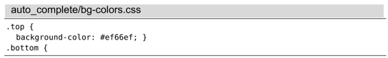
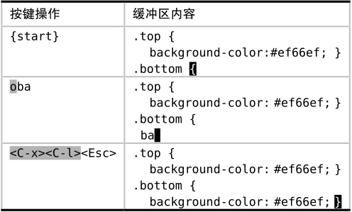

）进行触发。
）进行触发。 技巧115自动补全整行文本
到目前为止的所有示例中，我们所看到的都是为单词补全，但是Vim也可以为整行的文本实现自动补全。面向行的自动补全功能可以通过<C-x><C-l>（参见:hcompl-whole-line）进行触发。
假设我们由这段文本开始：

我们想复制第二行内容并将其粘贴至文件的末尾。接下来，我将为大家介绍如何通过整行的自动补全功能来实现这一点（参见表19-3）。
表19-3 复制第二行至文件的末尾

普通关键字自动补全（参见技巧113）所采用的文件，也同样用于生成行自动补全的建议列表。另外请注意，Vim会忽略行首的缩进。
面向行的自动补全功能，妙就妙在我们不用知道要复制的行的具体位置，而只需知道有这样一行文本存在即可。想象一下，在输入了前几个字符后，当我们敲<C-x><C-l>时，哇塞！Vim真地帮我们补全了余下的字符。
我们已经见识过另外两种通过寄存器（参见创建文本行的副本）或Ex命令（用‘：t’命令复制行）实现复制整行文本的方法。这3种方法各有利弊。因此，我们要试着辨别这3种技术各自所擅长的场景，再相应地使用它们。